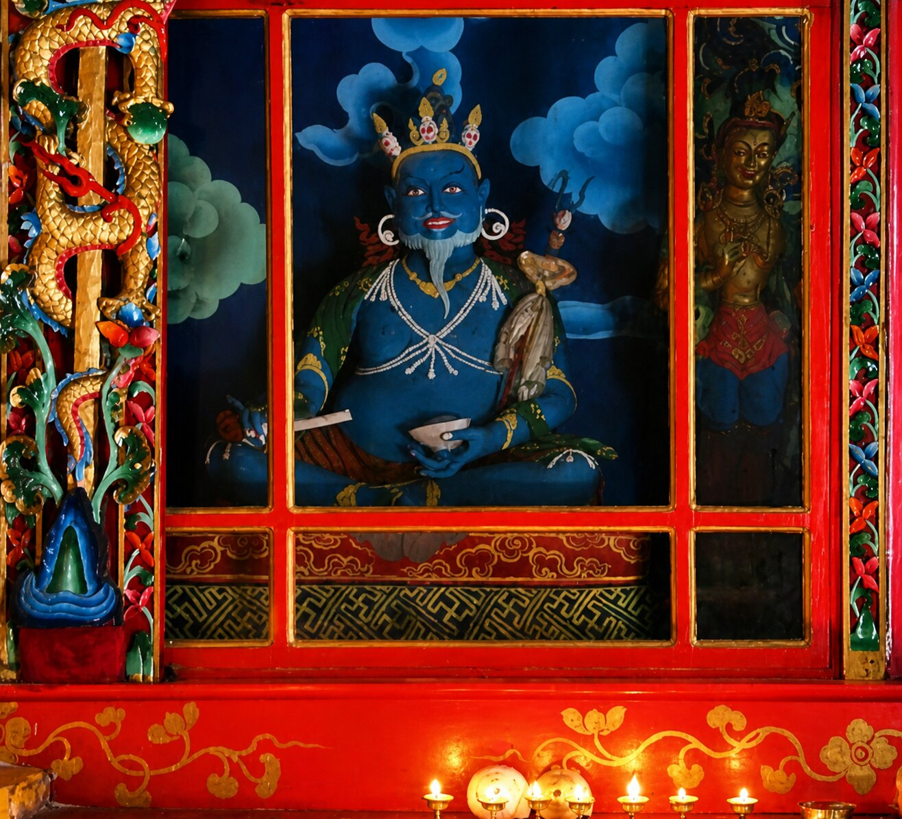

Gyalwa Lhatsun Chenpo

Ancient idol of Gyalwa Lhatsun Chenpo preserved within the monastery.
Gyalwa Lhatsun Chenpo is regarded as one of the principal spiritual figures in the history of Sikkim. Revered as a patron saint of Denjong, he played a central role in the establishment of the Namgyal dynasty in 1642 and in shaping the religious identity of the region.
He is also associated with the sacred geography of Sikkim, particularly the vision of “Denzong” as a hidden land blessed by Guru Padmasambhava. Lhatsun Chenpo is credited with revealing the “Denzong Lamyig,” a guide to the spiritual landscape, including the symbolism of the five treasures of Kangchenjunga.
Within Sangchen Thongdrol Ling, the presence of his image reflects this deep lineage connection. As Pemayangtse Monastery is considered the principal seat associated with Lhatsun Chenpo, Ging Gompa inherits this association through its historical and institutional ties.
His liturgical compositions, including the practice of “Riwo Sangchoe” (smoke offering), continue to be performed across Tibetan Buddhist traditions, reinforcing his enduring influence in ritual and devotional life.